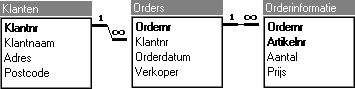
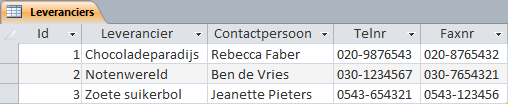
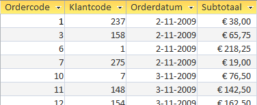
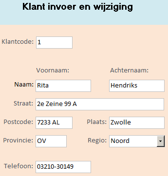
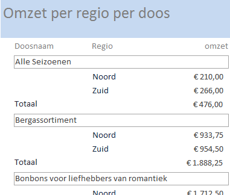
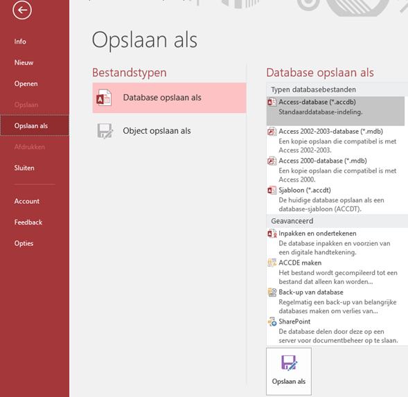

1 Beginnen met Access
- Wat databases zijn en hoe deze zijn opgebouwd.
- Beknopte kennismaking met de componenten (tabellen, query’s, formulieren, rapporten, macro’s, modules).
- Het opstarten en afsluiten van Access.
- Het openen van een bestaande database en het kunnen opslaan hiervan onder een andere naam en/of in een ander bestandsformaat.
- De inrichting van het programmavenster van Access.
Access is een programma uit de Microsoft Office reeks waarmee je databases kunt maken. Hiermee kun je gegevens opslaan, beheren en analyseren. De gegevens bevatten bijvoorbeeld detailinformatie over klanten, orders, artikelen, leveranciers, enz. Deze gegevens worden geordend opgeslagen, waardoor je antwoorden kunt krijgen op vragen als
- Wat is de omzet per klant geweest in het afgelopen halfjaar?
- Welke artikelen zorgen voor het grootste deel van de omzet?
Access wordt als een moeilijk programma gezien. Dat komt door de manier waarop databases in elkaar zitten en werken. Met de andere programma’s uit de Microsoft Office reeks als Excel, Word en Powerpoint kun je direct na het opstarten beginnen met gegevens in te voeren. Dat kan in Access niet. Je moet eerst een structuur voor de database bedenken en aanmaken voordat je gegevens in kunt voeren. Voor de wat grotere en complexere databases is dat al snel werk voor specialisten.
1.1 Wat zijn databases?
Een database is een verzameling gegevens welke betrekking heeft op een bepaald onderwerp of een bepaald doel, bijvoorbeeld klanten en hun orders. Al deze gegevens worden vaak in afzonderlijke tabellen opgeslagen die samen de database vormen. In de eenvoudigste vorm kan een database uit slechts één tabel bestaan. Bij meerdere tabellen worden er relaties tussen de tabellen aangebracht waardoor je gegevens uit meerdere tabellen aan elkaar kunt koppelen. Een dergelijke database wordt daarom ook wel een relationele database genoemd.

Figuur 1.1: Voorbeeld van een relationele database met drie tabellen met onderlinge relaties.
Naast het maken en onderhouden van tabellen kun je met Access ook formulieren, query’s en rapporten maken. Via de formulieren kun je de gegevens gemakkelijk en efficiënt bijwerken, zodat je niet rechtstreeks met de tabellen hoeft te werken. En met query’s kun je antwoorden op vragen krijgen, waarbij de onderliggende informatie uit verschillende tabellen kan komen. Via rapporten kun je er voor zorgen dat de uitvoer netjes en overzichtelijk op scherm of papier verschijnt.
Access kent de volgende onderdelen (objecten) in een database:
- Tabellen
- Query’s
- Formulieren
- Rapporten
- Macro’s
- Modules
In Access wordt een database als één bestand opgeslagen, waarin al deze onderdelen van de database zitten.
De werkzaamheden met databases kun je onderscheiden in:
Ontwerpen en maken van de database. Dit houdt in het maken van de tabellen, query’s, formulieren en rapporten. Dit is werk voor de bouwer van de database.
Omgaan met gegevens. Dit betreft het invoeren en wijzigen van gegevens, het maken van rapportages, het zoeken in de database, enz. Dit is werk waarmee de eindgebruiker bezig is.
Tabellen
In de tabellen worden de gegevens opgeslagen. Voor elk soort gegevens is er meestal één tabel. Zo kun je een tabel Producten hebben die allerlei gegevens over de producten bevat. En een tabel Leveranciers bevat gegevens over de bedrijven die de producten leveren. Om te weten welke tabellen je waarvoor nodig hebt moet er vooraf goed over de structuur van de database worden nagedacht. Een goed ontworpen database moet aan bepaalde criteria voldoen. Om een goed ontworpen database te maken wordt vaak gebruik gemaakt van een proces dat normaliseren heet.
In een tabel zijn gegevens in kolommen (velden) en rijen (records) ingedeeld.

Figuur 1.2: Voorbeeld van een tabel met 3 records en 5 velden.
- Veld
- Een veld is een categorie van gegevens, zoals bedrijfsnaam, contactpersoon, telefoonnummer, artikelprijs, … In een tabel is elke kolom een veld.
- Record
- Een record is een verzameling van gegevens over een persoon, artikel, bedrijf, … In een tabel is elke rij een record.
Query’s
Via een query kun je een opdracht geven om bepaalde gegevens te selecteren en deze weer te geven. Je stelt als het ware een vraag aan de database, bijvoorbeeld “Welke producten hebben een leverancier uit Australië”. De gegevens die nodig zijn voor het antwoord op de query kunnen uit meerdere tabellen afkomstig zijn. De query brengt de gewenste informatie bijeen. Het resultaat van een query is een verzameling records die ook wel dynaset genoemd wordt.
Bij het ontwerp van een query geef je aan welke gegevens je nodig hebt. Zo kun je bijvoorbeeld een query definiëren om ordergegevens over een bepaalde periode weer te geven. De query haalt dan de gegevens op uit de verschillende tabellen. Daarnaast kun je met een query ook berekeningen uitvoeren, zoals het berekenen van totalen.

Figuur 1.3: Voorbeeld van een query met ordergegevens.
Een ander soort query is de actiequery die een bepaalde bewerking op de geselecteerde records uitvoert.
Formulieren
Wanneer je meerdere records tegelijk wilt bekijken is een weergave in tabelvorm wel gemakkelijk. Maar wanneer je afzonderlijke records wilt bekijken of gegevens wilt presenteren met een aangepaste indeling, dan kun je beter een formulier gebruiken.
Een formulier biedt vaak de handigste indeling voor het invoeren, wijzigen en bekijken van afzonderlijke records in een database. Wanneer je een formulier ontwerpt geef je hierin aan hoe de gegevens moeten worden weergegeven. Bij het openen van het formulier worden de gewenste gegevens opgehaald uit de onderliggende tabellen en daarna volgens het gemaakte formulierontwerp weergegeven. Desgewenst kun je taken automatiseren door macro’s of modules in de formulieren te gebruiken.

Figuur 1.4: Voorbeeld van een formulier voor het invoeren of wijzigen van klantgegevens. Merk op dat voor het invoeren van de Regio is een keuzelijst aanwezig.
In Access-formulieren kun je keuzelijsten opnemen met te kiezen waarden. Ook kun je een bericht laten weergeven wanneer een onjuiste waarde wordt ingevoerd. Bovendien kun je gegevens automatisch laten invullen en kun je de resultaten van berekeningen automatisch laten weergeven. Met een druk op de muisknop kun je overschakelen van de formulierweergave naar de gegevensbladweergave, een weergave in tabelvorm van dezelfde set records.
Rapporten
Met een rapport kun je gegevens presenteren op papier of scherm en kun je totalen en eindtotalen van een verzameling records berekenen en weergeven.
Via rapporten kun je gegevens met allerlei opmaken en stijlen afdrukken: gegevens uit velden, tekst die je definieert, totalen en het resultaat van berekeningen. Je kunt grafieken, figuren of andere objecten opnemen en je kunt adresetiketten maken.

Figuur 1.5: Voorbeeld van een deel van een rapport.
Besturingselementen
De elementen van een formulier of rapport die ervoor zorgen dat gegevens worden weergegeven of afgedrukt, heten besturingselementen. Voorbeelden van besturingselementen zijn knoppen, keuzelijsten en keuzevakjes.
Met besturingselementen kun je onder andere het volgende weergeven: gegevens in een veld, de resultaten van een berekening, woorden voor een titel of bericht, een grafiek of een figuur of een ander object, zelfs een ander formulier of rapport.
Macro’s
Een macro is een verzameling van een of meer acties, zoals bijvoorbeeld het openen van een formulier of het afdrukken van een rapport. Met macro’s kun je veel voorkomende taken automatiseren. Je kunt macro’s op verschillende plaatsen gebruiken. Je kunt een macro bijvoorbeeld verbinden met een formulier, rapport, besturingselement, toetsencombinatie of opdracht in een menu. Om een macro te maken hoef je geen programmeerervaringen te hebben.
1.2 Taak: Access opstarten
De mogelijkheden om Access op te starten hangen af van de manier waarop het systeem geïnstalleerd is. Deze cursus gaat uit van een standaard installatie van Microsoft Office 365 NL op een systeem met Windows 10 NL. Op bijna alle computers kan Access via de startknop van Windows gestart worden en deze methode wordt hierna beschreven.
Kies Start > Access.
Hierna verschijnt het opstartscherm van Access. In het linkerdeel staan de laatst geopende bestanden en in het rechterdeel een overzicht van beschikbare sjablonen.
1.3 Taak: Access afsluiten
Om een database af te sluiten kies je Bestand > Sluiten.
Om Access zelf af te sluiten klik je op de sluitknop van het programmavenster. Dit is een knop met een X in de rechterbovenhoek van het venster.
Sluit het programmavenster van Access.
In tegenstelling tot de meeste andere programma’s hoef je in Access een database niet op te slaan. Alle gemaakte wijzigingen worden automatisch bewaard.
1.4 Taak: Database openen
Veel gebruikte methodes om een reeds bestaande Access database te openen zijn:
- Dubbelklikken op een Accessbestand in de Windows verkenner.
- In het opstartscherm van Access op een recent bestand klikken of kiezen voor Andere bestanden openen.
- Wanneer Access reeds geopend is kiezen voor Bestand > Openen.
Open via een van de hiervoor genoemde methodes het bestand snoep365.accdb.
1.5 Access venster
Het programmavenster van Access bestaat van boven naar beneden uit een gedeelte voor de besturing van het programma, het werkblad voor de documentvensters en de statusbalk.

Figuur 1.6: Programmavenster Access.
- Bestand
- Deze knop bevindt zich in de linkerbovenhoek van het programmavenster. Onder deze knop zitten een aantal basisopdrachten die je bij alle Office programma’s terugvindt zoals het openen, opslaan en afdrukken van bestanden. Ook zit hieronder de belangrijke opdracht Opties, waarmee je een aantal instellingen voor Access kunt regelen.
- Werkbalk Snelle Toegang
- In de Werkbalk Snelle Toegang staan een aantal knoppen voor opdrachten die je vaak gebruikt en anders minder snel kunt vinden. Je kunt zelf knoppen aan deze werkbalk toevoegen. Bij de standaard installatie van Access staan hierop drie knoppen:
-
 - Opslaan
- Opslaan
-
- - Ongedaan maken
- - Opnieuw
- Lint
- Het lint is een paneel, een soort brede werkbalk aan de bovenkant van het programmavenster. Op het lint staan opdrachten die georganiseerd zijn in logische groepen die weer verzameld worden in tabbladen zoals Start, Maken, …. Elk tabblad heeft met een bepaald soort activiteit te maken. Sommige tabbladen worden alleen maar getoond wanneer je ze nodig hebt, de zogenaamde contextuele tabbladen. Een voorbeeld hiervan is het tabblad Tabel, welke alleen verschijnt wanneer een tabel geopend is. Verder staan de opdrachten die je waarschijnlijk het meest nodig hebt zoveel mogelijk aan de linkerkant en staan de meest gespecialiseerde opdrachten uiterst rechts.
Je kunt het lint niet verwijderen, maar je kunt het lint wel minimaliseren met de toetscombinatie Ctrl + F1. Je ziet dan alleen de tabs. Opnieuw indrukken van deze toetscombinatie brengt het volledige lint weer terug.
- Tabbladen
- Aan de bovenkant van het lint zijn tabs zichtbaar. Op elke tab staan groepen commando’s. Sommige tabs worden alleen maar getoond wanneer je ze nodig hebt.
- Groepen
- Op elk tabblad staan groepen van bij elkaar behorende opdrachten. De groepen bevatten alle opdrachten die je nodig kunt hebben voor een bepaald soort taak. Bij de meeste groepen zijn niet alle opdrachten zichtbaar. Wanneer je meer opties wilt zien die voor de groep beschikbaar zijn moet je op de pijl in de rechterbenedenhoek van de groep klikken.
- Opdrachtknop
- Wanneer je op een opdrachtknop klikt dan wordt de wijziging onmiddellijk aangebracht. Het kan ook zijn dat er eerst een keuzelijst of een dialoogvenster verschijnt.
- Navigatievenster
- Het navigatiedeelvenster staat aan de linkerkant en hierin zijn alle objecten van de database te vinden.
- Documentvensters
- Wanneer een object wordt geopend dan verschijnt deze in een eigen documentvenster.
1.6 Nieuwe database venster
Aan het maken van een database hoort eigenlijk een proces van informatieanalyse vooraf te gaan, gevolgd door een normalisatieproces. Dan is de structuur van de database bekend en weet je welke tabellen met welke velden je moet maken. Daarom is het maken van een nieuwe database geen doel van deze cursus. Wanneer je weet wat er gemaakt moet worden is het maken van een database niet moeilijk meer. Hierna volgen een paar richtlijnen hoe je te werk zou kunnen gaan.
Het startpunt is het opstartscherm van Access. In het linkerdeel staan de laatst geopende bestanden en in het rechterdeel een overzicht van beschikbare sjablonen.
Allereerst kun je Access de opdracht geven om een lege nieuwe database aan te maken door te klikken op het sjabloon Lege database. In het dan volgende scherm moet je de naam en opslagplek van de nieuwe database opgeven. Vervolgens maakt Access deze database en maakt tegelijk een nieuwe lege tabel. Het maken van tabellen komt verderop in deze cursus aan bod.
Access voorziet in een aantal sjablonen voor veel voorkomende soorten databases, zie de knoppen in het opstartscherm. Wanneer de nieuw te maken database in de buurt komt van deze sjablonen dan kun je hier gebruik van maken. Door te klikken op een sjabloon wordt een database inclusief tabellen met velden en vaak ook een aantal query’s, formulieren en rapporten aangemaakt. Daarna kun je de ontwerpen aanpassen. Dit is soms handiger en sneller dan alles handmatig vanaf nul te beginnen.
1.7 Taak: Database opslaan als
Soms kan het wenselijk zijn om meerdere versies van een bestand te hebben. In dat geval kun je het bestand onder een andere naam bewaren via Database opslaan als. Ook wanneer je het bestand in een ouder Access formaat wilt opslaan kun je deze menukeuze gebruiken.
In deze cursus wordt een database met de bestandsnaam snoep365.accdb gebruikt. Omdat Access alle wijzigingen die je aanbrengt onmiddellijk zonder te vragen opslaat, beschik je al vrij snel niet meer over de originele database. Het is daarom aan te bevelen om te beginnen met eerst een kopie van de originele database snoep365.accdb te maken, voordat je met deze database gaat werken. Je kunt dat op bestandsniveau doen met de Windows verkennner, maar je kunt ook gebruik maken van de Opslaan als opdracht in Access.
Open de database snoep365.accdb.
Kies Bestand > Opslaan als.

Figuur 1.7: Dialoogvenster Opslaan als
Selecteer Access-database (*.accdb) en klik Opslaan als.
Blader in het dialoogvenster naar de opslagplaats, specificeer de naam van het nieuwe bestand en klik op Opslaan.
Backup maken
Een backup is in feite niets anders dan een kopie van een database die je op een bepaald moment gemaakt hebt. In feite is dit hetzelfde proces als met de Opslaan als opdracht. Toch biedt Access nog een backup functie aan.
Kies Bestand > Opslaan als. Selecteer in het venster Back-up van database en klik Opslaan als. Je kunt daarna de opslagplaats en naam specificeren. Standaard is de voorgestelde naam de naam van het originele bestand, aangevuld met de actuele datum.
Wanneer je gegevens of objecten terugzet vanuit het backup bestand, wil je weten van welke database de backup gemaakt is, alsmede wanneer deze gemaakt is. Het is daarom aan te bevelen om de voorgestelde naam te gebruiken.
1.8 Bestandsformaten van Access
Een overzicht van de nieuwe en oude bestandsformaten van Access.
- ACCDB
- Dit is het standaardformaat voor bestanden gemaakt met Access 2007 en later.
Omdat de bestandsformaten gelijk zijn kun je bijvoorbeeld in Access 2007 een database openen die met Access 2016 gemaakt is. Echter nieuwe functies die in de oudere versies niet beschikbaar zijn zullen niet werken. Hierdoor kunnen problemen optreden.
- MDB
- Dit is het bestandsformaat voor Access 2003 en eerder. Een dergelijk bestand kan ook door Access 2007, 2010, 2013 en 2016 geopend worden. Ook kan Access 2016 een database in dit oudere bestandsformaat opslaan.|